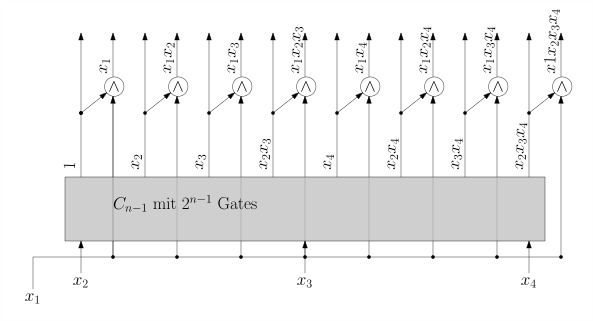

2.6 Untere und obere Schranken./course1/wly/02/06-lower-and-upper-bounds.wly:2:11
2.6 Untere und obere Schranken./course1/wly/02/06-lower-and-upper-bounds.wly:2:11
Wir haben zwei Methoden gesehen, zu einer beliebigen./course1/wly/02/06-lower-and-upper-bounds.wly:4:5 Booleschen Funktion ./course1/wly/02/06-lower-and-upper-bounds.wly:5:5$f : \fcube$./course1/wly/02/06-lower-and-upper-bounds.wly:5:25 einen Booleschen./course1/wly/02/06-lower-and-upper-bounds.wly:5:37 Schaltkreis zu konstruieren: top-down, indem wir ./course1/wly/02/06-lower-and-upper-bounds.wly:6:5$f$./course1/wly/02/06-lower-and-upper-bounds.wly:6:54 in./course1/wly/02/06-lower-and-upper-bounds.wly:6:57 ./course1/wly/02/06-lower-and-upper-bounds.wly:7:5$f_0$./course1/wly/02/06-lower-and-upper-bounds.wly:7:5 und ./course1/wly/02/06-lower-and-upper-bounds.wly:7:10$f_1$./course1/wly/02/06-lower-and-upper-bounds.wly:7:15 zerlegen und mit Hilfe eines./course1/wly/02/06-lower-and-upper-bounds.wly:7:20 if-then-else-Gates wieder zusammenfügen; und bottom-up als./course1/wly/02/06-lower-and-upper-bounds.wly:8:5 DNF oder CNF. Die so entstandenen Schaltkreise hatten Größe./course1/wly/02/06-lower-and-upper-bounds.wly:9:5 ./course1/wly/02/06-lower-and-upper-bounds.wly:10:5$O(2^n)$./course1/wly/02/06-lower-and-upper-bounds.wly:10:5 (bzw. ./course1/wly/02/06-lower-and-upper-bounds.wly:10:13$O(n2^n)$./course1/wly/02/06-lower-and-upper-bounds.wly:10:20 wenn wir zuerst eine CNF oder DNF./course1/wly/02/06-lower-and-upper-bounds.wly:10:29 bauen und dann auf Fan-in 2 bestehen). Die offensichtliche./course1/wly/02/06-lower-and-upper-bounds.wly:11:5 Frage: geht es besser? Die Antwort: Ja, aber nicht viel./course1/wly/02/06-lower-and-upper-bounds.wly:12:5 besser../course1/wly/02/06-lower-and-upper-bounds.wly:13:5
Theorem 2.6.1 (Shannon)../course1/wly/02/06-lower-and-upper-bounds.wly:15:5 Es gibt Boolesche Funktionen ./course1/wly/02/06-lower-and-upper-bounds.wly:16:21$f$./course1/wly/02/06-lower-and-upper-bounds.wly:16:51,./course1/wly/02/06-lower-and-upper-bounds.wly:16:54 die keine./course1/wly/02/06-lower-and-upper-bounds.wly:16:54 Schaltkreise kleiner als ./course1/wly/02/06-lower-and-upper-bounds.wly:17:9$\Omega(2^n / n)$./course1/wly/02/06-lower-and-upper-bounds.wly:17:34 haben../course1/wly/02/06-lower-and-upper-bounds.wly:17:51
Beweis Die Beweismethode ist vielleicht neu für Sie, aber in der./course1/wly/02/06-lower-and-upper-bounds.wly:20:9 Komplexitätstheorie und Kombinatorik sehr wichtig. Wir./course1/wly/02/06-lower-and-upper-bounds.wly:21:9 stellen uns zwei ./course1/wly/02/06-lower-and-upper-bounds.wly:22:9Zählaufgaben./course1/wly/02/06-lower-and-upper-bounds.wly:22:27:./course1/wly/02/06-lower-and-upper-bounds.wly:22:40 (1) wie viele Boolesche./course1/wly/02/06-lower-and-upper-bounds.wly:22:40 Funktion ./course1/wly/02/06-lower-and-upper-bounds.wly:23:9$f : \fcube$./course1/wly/02/06-lower-and-upper-bounds.wly:23:18 gibt es? (2) Wie viele Boolesche./course1/wly/02/06-lower-and-upper-bounds.wly:23:30 Schaltkreise mit ./course1/wly/02/06-lower-and-upper-bounds.wly:24:9$n$./course1/wly/02/06-lower-and-upper-bounds.wly:24:26 Input-Variablen, Fan-in 2 und ./course1/wly/02/06-lower-and-upper-bounds.wly:24:29$s$./course1/wly/02/06-lower-and-upper-bounds.wly:24:60 ./course1/wly/02/06-lower-and-upper-bounds.wly:24:63 Gates gibt es? Wenn die Antwort auf (2) kleiner ausfällt./course1/wly/02/06-lower-and-upper-bounds.wly:25:9 als auf (1), dann können nicht alle Booleschen Funktionen./course1/wly/02/06-lower-and-upper-bounds.wly:26:9 mit ./course1/wly/02/06-lower-and-upper-bounds.wly:27:9$n$./course1/wly/02/06-lower-and-upper-bounds.wly:27:13 Variablen einen Schaltkreis mit weniger als ./course1/wly/02/06-lower-and-upper-bounds.wly:27:16$s$./course1/wly/02/06-lower-and-upper-bounds.wly:27:61 ./course1/wly/02/06-lower-and-upper-bounds.wly:27:64 Gates haben. Es gibt einfach nicht genug für alle. Dahinter./course1/wly/02/06-lower-and-upper-bounds.wly:28:9 steht folgende Beobachtung: zwei verschiedene Boolesche./course1/wly/02/06-lower-and-upper-bounds.wly:29:9 Funktionen brauchen verschiedene Schaltkreise; sie können./course1/wly/02/06-lower-and-upper-bounds.wly:30:9 sich nicht einen "teilen" (dieses Behauptung erscheint./course1/wly/02/06-lower-and-upper-bounds.wly:31:9 trivial und ist es auch; machen Sie sich aber klar, dass./course1/wly/02/06-lower-and-upper-bounds.wly:32:9 wir diese Eigenschaft benötigen, falls Sie nämlich ein./course1/wly/02/06-lower-and-upper-bounds.wly:33:9 Abzählargument in anderen Kontexten anwenden). Die Antwort./course1/wly/02/06-lower-and-upper-bounds.wly:34:9 auf (1) ist einfach: es gibt genau ./course1/wly/02/06-lower-and-upper-bounds.wly:35:9$2^{2^n}$./course1/wly/02/06-lower-and-upper-bounds.wly:35:44 Boolesche./course1/wly/02/06-lower-and-upper-bounds.wly:35:53 Funktionen mit ./course1/wly/02/06-lower-and-upper-bounds.wly:36:9$n$./course1/wly/02/06-lower-and-upper-bounds.wly:36:24 Variablen. Warum? Die Wahrheitstabelle./course1/wly/02/06-lower-and-upper-bounds.wly:36:27 hat ./course1/wly/02/06-lower-and-upper-bounds.wly:37:9$2^n$./course1/wly/02/06-lower-and-upper-bounds.wly:37:13 Zeilen. Sie könnne sich also ./course1/wly/02/06-lower-and-upper-bounds.wly:37:18$2^n$./course1/wly/02/06-lower-and-upper-bounds.wly:37:48 mal für ./course1/wly/02/06-lower-and-upper-bounds.wly:37:53$0$./course1/wly/02/06-lower-and-upper-bounds.wly:37:62 ./course1/wly/02/06-lower-and-upper-bounds.wly:37:65 oder ./course1/wly/02/06-lower-and-upper-bounds.wly:38:9$1$./course1/wly/02/06-lower-and-upper-bounds.wly:38:14 entscheiden../course1/wly/02/06-lower-and-upper-bounds.wly:38:17
Behauptung Sei ./course1/wly/02/06-lower-and-upper-bounds.wly:42:13$s \geq n \geq 1$./course1/wly/02/06-lower-and-upper-bounds.wly:42:17../course1/wly/02/06-lower-and-upper-bounds.wly:42:34 Dann gibt es höchstens ./course1/wly/02/06-lower-and-upper-bounds.wly:42:34$s^{2s+1}$./course1/wly/02/06-lower-and-upper-bounds.wly:42:59 ./course1/wly/02/06-lower-and-upper-bounds.wly:42:69 Schaltkreise mit ./course1/wly/02/06-lower-and-upper-bounds.wly:43:13$n$./course1/wly/02/06-lower-and-upper-bounds.wly:43:30 Input-Variablen, Fan-in 2 und ./course1/wly/02/06-lower-and-upper-bounds.wly:43:33$s$./course1/wly/02/06-lower-and-upper-bounds.wly:43:64 ./course1/wly/02/06-lower-and-upper-bounds.wly:43:67 Gates../course1/wly/02/06-lower-and-upper-bounds.wly:44:13
Beweis Wir bauen den Schaltkreis, indem wir erst einmal ./course1/wly/02/06-lower-and-upper-bounds.wly:47:13$s$./course1/wly/02/06-lower-and-upper-bounds.wly:47:62 Gates./course1/wly/02/06-lower-and-upper-bounds.wly:47:65 unbeschriftet "hinmalen". Um nun zu entscheiden, was für./course1/wly/02/06-lower-and-upper-bounds.wly:48:13 ein Schaltkreis das sein soll, müssen wir Entscheidungen./course1/wly/02/06-lower-and-upper-bounds.wly:49:13 treffen:./course1/wly/02/06-lower-and-upper-bounds.wly:50:13
Für jedes der ./course1/wly/02/06-lower-and-upper-bounds.wly:54:21$s$./course1/wly/02/06-lower-and-upper-bounds.wly:54:35 Gates, was es sein soll../course1/wly/02/06-lower-and-upper-bounds.wly:54:38
Ein Input-Gate? Dann müssen wir es mit einer der ./course1/wly/02/06-lower-and-upper-bounds.wly:58:29$n$./course1/wly/02/06-lower-and-upper-bounds.wly:58:78 ./course1/wly/02/06-lower-and-upper-bounds.wly:58:81 Input-Variablen beschriften../course1/wly/02/06-lower-and-upper-bounds.wly:59:29
Ein Not-Gate? Dann müssen wir eines der anderen Gates als./course1/wly/02/06-lower-and-upper-bounds.wly:62:29 Vorgänger-Gate wählen. Wir haben höchstens ./course1/wly/02/06-lower-and-upper-bounds.wly:63:29$s-1$./course1/wly/02/06-lower-and-upper-bounds.wly:63:72 ./course1/wly/02/06-lower-and-upper-bounds.wly:63:77 Möglichkeiten../course1/wly/02/06-lower-and-upper-bounds.wly:64:29
Ein And-Gate? Dann müssen wir zwei der anderen Gates als./course1/wly/02/06-lower-and-upper-bounds.wly:67:29 Vorgänger-Gates wählen. Wir haben höchstesn./course1/wly/02/06-lower-and-upper-bounds.wly:68:29 ./course1/wly/02/06-lower-and-upper-bounds.wly:69:29${s-1 \choose 2} = \frac{(s-1)(s-2)}{2}$./course1/wly/02/06-lower-and-upper-bounds.wly:69:29 Möglichkeiten../course1/wly/02/06-lower-and-upper-bounds.wly:69:69
Ein Or-Gate? Dann haben wir auch höchstens./course1/wly/02/06-lower-and-upper-bounds.wly:72:29 ./course1/wly/02/06-lower-and-upper-bounds.wly:73:29${s-1 \choose 2}$./course1/wly/02/06-lower-and-upper-bounds.wly:73:29 Möglichkeiten../course1/wly/02/06-lower-and-upper-bounds.wly:73:46
Insgesamt haben wir also./course1/wly/02/06-lower-and-upper-bounds.wly:75:21
Möglichkeiten../course1/wly/02/06-lower-and-upper-bounds.wly:82:21
Für den gesamten Schaltkreis: welches Gate Output-Gate./course1/wly/02/06-lower-and-upper-bounds.wly:85:21 sein soll. Da haben wir ./course1/wly/02/06-lower-and-upper-bounds.wly:86:21$s$./course1/wly/02/06-lower-and-upper-bounds.wly:86:45 Möglichkeiten../course1/wly/02/06-lower-and-upper-bounds.wly:86:48
Um die Gesamtzahl der Möglichkeiten abzuschätzen, müssen./course1/wly/02/06-lower-and-upper-bounds.wly:88:13 wir das alles multiplizieren. Wir haben höchstens./course1/wly/02/06-lower-and-upper-bounds.wly:89:13
Möglichkeiten. Es gibt also höchstens ./course1/wly/02/06-lower-and-upper-bounds.wly:97:13$s^{2s+1}$./course1/wly/02/06-lower-and-upper-bounds.wly:97:51 ./course1/wly/02/06-lower-and-upper-bounds.wly:97:61 verschiedene Schaltkreise mit ./course1/wly/02/06-lower-and-upper-bounds.wly:98:13$s$./course1/wly/02/06-lower-and-upper-bounds.wly:98:43 Gates, Fan-in 2 und ./course1/wly/02/06-lower-and-upper-bounds.wly:98:46$n$./course1/wly/02/06-lower-and-upper-bounds.wly:98:67 ./course1/wly/02/06-lower-and-upper-bounds.wly:98:70 Variablen../course1/wly/02/06-lower-and-upper-bounds.wly:99:13A\(\square\)
Wählen wir nun ./course1/wly/02/06-lower-and-upper-bounds.wly:101:9$s := 2^{n} / (2n)$./course1/wly/02/06-lower-and-upper-bounds.wly:101:24../course1/wly/02/06-lower-and-upper-bounds.wly:101:43 Wieviele Schaltkreise./course1/wly/02/06-lower-and-upper-bounds.wly:101:43 mit ./course1/wly/02/06-lower-and-upper-bounds.wly:102:9$n$./course1/wly/02/06-lower-and-upper-bounds.wly:102:13 Variablen, Fan-in 2 und ./course1/wly/02/06-lower-and-upper-bounds.wly:102:16$s$./course1/wly/02/06-lower-and-upper-bounds.wly:102:41 Gates gibt es? Die./course1/wly/02/06-lower-and-upper-bounds.wly:102:44 Schranke in der obigen Behauptung sagt, dies seien./course1/wly/02/06-lower-and-upper-bounds.wly:103:9 höchstens./course1/wly/02/06-lower-and-upper-bounds.wly:104:9
Also: es gibt mehr Boolesche Funktionen in ./course1/wly/02/06-lower-and-upper-bounds.wly:112:9$n$./course1/wly/02/06-lower-and-upper-bounds.wly:112:52 Variablen,./course1/wly/02/06-lower-and-upper-bounds.wly:112:55 als es Boolesche Schaltkreise mit ./course1/wly/02/06-lower-and-upper-bounds.wly:113:9$\frac{2^n}{2n}$./course1/wly/02/06-lower-and-upper-bounds.wly:113:43 Gates./course1/wly/02/06-lower-and-upper-bounds.wly:113:59 gibt. Somit benötigen manche Boolesche Funktionen mehr als./course1/wly/02/06-lower-and-upper-bounds.wly:114:9 ./course1/wly/02/06-lower-and-upper-bounds.wly:115:9$\frac{2^n}{2n}$./course1/wly/02/06-lower-and-upper-bounds.wly:115:9 Gates../course1/wly/02/06-lower-and-upper-bounds.wly:115:25A\(\square\)
Übungsaufgabe 2.6.1./course1/wly/02/06-lower-and-upper-bounds.wly:117:5 ./course1/wly/02/06-lower-and-upper-bounds.wly:117:5 In Theorem und Beweis sprechen wir die ganze Zeit nur von./course1/wly/02/06-lower-and-upper-bounds.wly:118:9 Schaltkreisen mit Fan-in 2. Was geschieht, wenn wir./course1/wly/02/06-lower-and-upper-bounds.wly:119:9 beliebigen Fan-in erlauben? Wie ändern sich Aussage und./course1/wly/02/06-lower-and-upper-bounds.wly:120:9 Beweis? Was geschieht, wenn wir weitere Gates, z.B../course1/wly/02/06-lower-and-upper-bounds.wly:121:9 ./course1/wly/02/06-lower-and-upper-bounds.wly:122:9$\oplus$./course1/wly/02/06-lower-and-upper-bounds.wly:122:9 als atomare Gates zulassen?./course1/wly/02/06-lower-and-upper-bounds.wly:122:17
Der obige Beweis sagt noch mehr: der Anteil Boolescher./course1/wly/02/06-lower-and-upper-bounds.wly:124:5 Funktionen, bei denen wir mit ./course1/wly/02/06-lower-and-upper-bounds.wly:125:5$\frac{2^n}{2n}$./course1/wly/02/06-lower-and-upper-bounds.wly:125:35 Gates./course1/wly/02/06-lower-and-upper-bounds.wly:125:51 auskommen, ist verschwindend klein. Fast ./course1/wly/02/06-lower-and-upper-bounds.wly:126:5alle./course1/wly/02/06-lower-and-upper-bounds.wly:126:47 Funktionen./course1/wly/02/06-lower-and-upper-bounds.wly:126:52 brauchen also riesige Schaltkreise. In einem Gewissen Sinne./course1/wly/02/06-lower-and-upper-bounds.wly:127:5 haben wir also einfach Glück: die Funktionen, die uns./course1/wly/02/06-lower-and-upper-bounds.wly:128:5 interessieren, wie ./course1/wly/02/06-lower-and-upper-bounds.wly:129:5$n$./course1/wly/02/06-lower-and-upper-bounds.wly:129:24 -Bit-Addition, Majority, Parity und./course1/wly/02/06-lower-and-upper-bounds.wly:129:27 so weiter, haben einfach niedrige Komplexität. Das liegt./course1/wly/02/06-lower-and-upper-bounds.wly:130:5 wohl in der Natur der Sache: wir addieren, multiplizieren,./course1/wly/02/06-lower-and-upper-bounds.wly:131:5 bauen Brücken, Häuser, Flugzeuge, Computer, weil wir es./course1/wly/02/06-lower-and-upper-bounds.wly:132:5 ./course1/wly/02/06-lower-and-upper-bounds.wly:133:5können./course1/wly/02/06-lower-and-upper-bounds.wly:133:6,./course1/wly/02/06-lower-and-upper-bounds.wly:133:13 weil also die dafür benötigten Berechnungen./course1/wly/02/06-lower-and-upper-bounds.wly:133:13 effizient durchführbar sind../course1/wly/02/06-lower-and-upper-bounds.wly:134:5
Forschungsprojekt. Finde eine konkret beschreibbare Funktion ./course1/wly/02/06-lower-and-upper-bounds.wly:138:9$f: \fcube$./course1/wly/02/06-lower-and-upper-bounds.wly:138:51,./course1/wly/02/06-lower-and-upper-bounds.wly:138:62 die./course1/wly/02/06-lower-and-upper-bounds.wly:138:62 exponentiell viele (oder zumindest superpolynomiell viele)./course1/wly/02/06-lower-and-upper-bounds.wly:139:9 Gates benötigt../course1/wly/02/06-lower-and-upper-bounds.wly:140:9
Kandidaten für solche Funktionen gibt es viele. Im Prinzip./course1/wly/02/06-lower-and-upper-bounds.wly:142:5 gibt uns jedes Entscheidungsproblem, dass für eine./course1/wly/02/06-lower-and-upper-bounds.wly:143:5 "schwierige" Komplexitätsklasse vollständig ist, einen./course1/wly/02/06-lower-and-upper-bounds.wly:144:5 Kandidaten. Also zum Beispiel Graphenfärbbarkeit../course1/wly/02/06-lower-and-upper-bounds.wly:145:5
Entscheidungsproblem 3-Färbbarkeit. Gegeben ein Graph ./course1/wly/02/06-lower-and-upper-bounds.wly:149:9$G = (V,E)$./course1/wly/02/06-lower-and-upper-bounds.wly:149:27,./course1/wly/02/06-lower-and-upper-bounds.wly:149:38 gibt es eine Funktion./course1/wly/02/06-lower-and-upper-bounds.wly:149:38
so dass ./course1/wly/02/06-lower-and-upper-bounds.wly:155:9$c(u) \ne c(v)$./course1/wly/02/06-lower-and-upper-bounds.wly:155:17 für alle ./course1/wly/02/06-lower-and-upper-bounds.wly:155:32$\{u,v\} \in E$./course1/wly/02/06-lower-and-upper-bounds.wly:155:42 gilt?./course1/wly/02/06-lower-and-upper-bounds.wly:155:57 Dass also benachbarte Knoten verschiedene Farben bekommen?./course1/wly/02/06-lower-and-upper-bounds.wly:156:9
3-Färbbarkeit ist ein zentrales NP-vollständiges Problem../course1/wly/02/06-lower-and-upper-bounds.wly:158:5 Wir vermuten also, dass es dafür keinen polynomiellen./course1/wly/02/06-lower-and-upper-bounds.wly:159:5 Algorithmus gibt. Wir können es zur Zeit (April 2024) aber./course1/wly/02/06-lower-and-upper-bounds.wly:160:5 nicht beweisen. Dies ist das berühmte Problem P vs NP, von./course1/wly/02/06-lower-and-upper-bounds.wly:161:5 dem Sie sicher schon gehört haben und das als eines der./course1/wly/02/06-lower-and-upper-bounds.wly:162:5 großen offenen Probleme der Mathematik insgesamt gilt. Die./course1/wly/02/06-lower-and-upper-bounds.wly:163:5 Frage, ob NP-Probleme polynomiell große Schaltkreise haben,./course1/wly/02/06-lower-and-upper-bounds.wly:164:5 ist noch offener../course1/wly/02/06-lower-and-upper-bounds.wly:165:5
Übungsaufgabe 2.6.2./course1/wly/02/06-lower-and-upper-bounds.wly:167:5 ./course1/wly/02/06-lower-and-upper-bounds.wly:167:5 Formal gesehen ist Graphenfärbbarkeit eine Sprache./course1/wly/02/06-lower-and-upper-bounds.wly:168:9 ./course1/wly/02/06-lower-and-upper-bounds.wly:169:9$L \subseteq \Sigma^*$./course1/wly/02/06-lower-and-upper-bounds.wly:169:9 über einem Alphabet ./course1/wly/02/06-lower-and-upper-bounds.wly:169:31$\Sigma$./course1/wly/02/06-lower-and-upper-bounds.wly:169:52,./course1/wly/02/06-lower-and-upper-bounds.wly:169:60 dass./course1/wly/02/06-lower-and-upper-bounds.wly:169:60 uns erlaubt, Graphen zu codieren. Wie können wir ./course1/wly/02/06-lower-and-upper-bounds.wly:170:9$L$./course1/wly/02/06-lower-and-upper-bounds.wly:170:58 als./course1/wly/02/06-lower-and-upper-bounds.wly:170:61 Boolesche Funktion darstellen?./course1/wly/02/06-lower-and-upper-bounds.wly:171:9
Wir haben nun eine Konstruktion, die uns für jede./course1/wly/02/06-lower-and-upper-bounds.wly:176:5 beliebige Funktion ./course1/wly/02/06-lower-and-upper-bounds.wly:177:5$f: \fcube$./course1/wly/02/06-lower-and-upper-bounds.wly:177:24 Schaltkresie mit ./course1/wly/02/06-lower-and-upper-bounds.wly:177:35$O(2^n)$./course1/wly/02/06-lower-and-upper-bounds.wly:177:53 ./course1/wly/02/06-lower-and-upper-bounds.wly:177:61 Gates baut. Wir haben eine untere Schranke, die besagt,./course1/wly/02/06-lower-and-upper-bounds.wly:178:5 dass es mit weniger als ./course1/wly/02/06-lower-and-upper-bounds.wly:179:5$\frac{2^{n}}{2n}$./course1/wly/02/06-lower-and-upper-bounds.wly:179:29 Gates nicht./course1/wly/02/06-lower-and-upper-bounds.wly:179:47 geht. Diese beiden Schranken lassen aber immer noch eine./course1/wly/02/06-lower-and-upper-bounds.wly:180:5 Lücke der Größenordnung ./course1/wly/02/06-lower-and-upper-bounds.wly:181:5$n$./course1/wly/02/06-lower-and-upper-bounds.wly:181:29../course1/wly/02/06-lower-and-upper-bounds.wly:181:32 Können wir sie schließen?./course1/wly/02/06-lower-and-upper-bounds.wly:181:32
Theorem 2.6.2 (Lupanov)./course1/wly/02/06-lower-and-upper-bounds.wly:183:5../course1/wly/02/06-lower-and-upper-bounds.wly:185:20 Für jede Boolesche Funktion in ./course1/wly/02/06-lower-and-upper-bounds.wly:185:20$n$./course1/wly/02/06-lower-and-upper-bounds.wly:185:53 Variablen./course1/wly/02/06-lower-and-upper-bounds.wly:185:56 gibt es einen Schaltkreis mit Fan-in 2 und ./course1/wly/02/06-lower-and-upper-bounds.wly:186:9$O(2^n / n)$./course1/wly/02/06-lower-and-upper-bounds.wly:186:52 ./course1/wly/02/06-lower-and-upper-bounds.wly:186:64 Gates../course1/wly/02/06-lower-and-upper-bounds.wly:187:9
Beweis Der Beweis fußt auf zwei Kernideen: erstens bauen wir den./course1/wly/02/06-lower-and-upper-bounds.wly:190:9 Schaltkreis nicht mit AND- und OR- und NOT-Gates, sondern./course1/wly/02/06-lower-and-upper-bounds.wly:191:9 mit AND- und XOR-Gates. Da wir nach vollendeter./course1/wly/02/06-lower-and-upper-bounds.wly:192:9 Konstruktion jedes XOR-Gates durch einen kleinen./course1/wly/02/06-lower-and-upper-bounds.wly:193:9 Schaltkreis aus vier AND/OR/NOT-Gates ersetzen können,./course1/wly/02/06-lower-and-upper-bounds.wly:194:9 spielt dies keine Rolle (der Faktor 4 verschwindet in der./course1/wly/02/06-lower-and-upper-bounds.wly:195:9 ./course1/wly/02/06-lower-and-upper-bounds.wly:196:9$O$./course1/wly/02/06-lower-and-upper-bounds.wly:196:9 -Notation). Die zweite Idee ist, dass wir anstreben,./course1/wly/02/06-lower-and-upper-bounds.wly:196:12 für eine bliebige Menge ./course1/wly/02/06-lower-and-upper-bounds.wly:197:9$F$./course1/wly/02/06-lower-and-upper-bounds.wly:197:33 an Booleschen Funktionen einen./course1/wly/02/06-lower-and-upper-bounds.wly:197:36 "überraschend guten" Schaltkreis zu bauen, der jede./course1/wly/02/06-lower-and-upper-bounds.wly:198:9 Funktion ./course1/wly/02/06-lower-and-upper-bounds.wly:199:9$f \in F$./course1/wly/02/06-lower-and-upper-bounds.wly:199:18 berechnet. Dieser Schaltkreis wird ./course1/wly/02/06-lower-and-upper-bounds.wly:199:27$|F|$./course1/wly/02/06-lower-and-upper-bounds.wly:199:63 ./course1/wly/02/06-lower-and-upper-bounds.wly:199:68 Output-Gates haben, und seine Größe wird auch von ./course1/wly/02/06-lower-and-upper-bounds.wly:200:9$|F|$./course1/wly/02/06-lower-and-upper-bounds.wly:200:59 ./course1/wly/02/06-lower-and-upper-bounds.wly:200:64 abhängen../course1/wly/02/06-lower-and-upper-bounds.wly:201:9
$\F_2$./course1/wly/02/06-lower-and-upper-bounds.wly:203:10-Polynome../course1/wly/02/06-lower-and-upper-bounds.wly:203:16 Polynome in mehreren Variablen kennen./course1/wly/02/06-lower-and-upper-bounds.wly:203:27 Sie sicherlich: zum Beispiel ./course1/wly/02/06-lower-and-upper-bounds.wly:204:9$xyz + xy + 1 + y$./course1/wly/02/06-lower-and-upper-bounds.wly:204:38../course1/wly/02/06-lower-and-upper-bounds.wly:204:56 Der./course1/wly/02/06-lower-and-upper-bounds.wly:204:56 Unterschied hier ist nur, dass wir alle Werte modulo 2./course1/wly/02/06-lower-and-upper-bounds.wly:205:9 auswerten, also in dem endlichen Körper ./course1/wly/02/06-lower-and-upper-bounds.wly:206:9$\F_2$./course1/wly/02/06-lower-and-upper-bounds.wly:206:49 arbeiten../course1/wly/02/06-lower-and-upper-bounds.wly:206:55 Wir brauchen daher auch keine höheren Potenzen: ./course1/wly/02/06-lower-and-upper-bounds.wly:207:9$x^2$./course1/wly/02/06-lower-and-upper-bounds.wly:207:57 und./course1/wly/02/06-lower-and-upper-bounds.wly:207:62 ./course1/wly/02/06-lower-and-upper-bounds.wly:208:9$x$./course1/wly/02/06-lower-and-upper-bounds.wly:208:9 ergeben für alle ./course1/wly/02/06-lower-and-upper-bounds.wly:208:12$x \in \{0,1\}$./course1/wly/02/06-lower-and-upper-bounds.wly:208:30 die gleichen Werte../course1/wly/02/06-lower-and-upper-bounds.wly:208:45 Wenn wir in ./course1/wly/02/06-lower-and-upper-bounds.wly:209:9$\F_2$./course1/wly/02/06-lower-and-upper-bounds.wly:209:21 rechnen, können wir uns also auf./course1/wly/02/06-lower-and-upper-bounds.wly:209:27 ./course1/wly/02/06-lower-and-upper-bounds.wly:210:9multilineare./course1/wly/02/06-lower-and-upper-bounds.wly:210:10 Polynome beschränken. Führen wir Polynome./course1/wly/02/06-lower-and-upper-bounds.wly:210:23 formal ein: wir haben eine Menge ./course1/wly/02/06-lower-and-upper-bounds.wly:211:9$x_1, \dots, x_n$./course1/wly/02/06-lower-and-upper-bounds.wly:211:42 von./course1/wly/02/06-lower-and-upper-bounds.wly:211:59 Variablen; ein Monom in diesem Variablen ist ein Produkt./course1/wly/02/06-lower-and-upper-bounds.wly:212:9 aus Variablen, also ./course1/wly/02/06-lower-and-upper-bounds.wly:213:9$\prod_{i \in I} x_i$./course1/wly/02/06-lower-and-upper-bounds.wly:213:29 für eine Menge./course1/wly/02/06-lower-and-upper-bounds.wly:213:50 ./course1/wly/02/06-lower-and-upper-bounds.wly:214:9$I \subseteq [n]$./course1/wly/02/06-lower-and-upper-bounds.wly:214:9../course1/wly/02/06-lower-and-upper-bounds.wly:214:26 Wir schreiben das kurzerhand als ./course1/wly/02/06-lower-and-upper-bounds.wly:214:26$\x^I$./course1/wly/02/06-lower-and-upper-bounds.wly:214:61../course1/wly/02/06-lower-and-upper-bounds.wly:214:67 ./course1/wly/02/06-lower-and-upper-bounds.wly:214:67 Ein Polynom ist nun eine Summe von Monomen:./course1/wly/02/06-lower-and-upper-bounds.wly:215:9 ./course1/wly/02/06-lower-and-upper-bounds.wly:216:9$\x^{I_1} + \x^{I_2} + \dots + \x^{I_t}$./course1/wly/02/06-lower-and-upper-bounds.wly:216:9../course1/wly/02/06-lower-and-upper-bounds.wly:216:49 Beachten Sie,./course1/wly/02/06-lower-and-upper-bounds.wly:216:49 dass wir vor den Monomen keine Koeffizienten brauchen, da./course1/wly/02/06-lower-and-upper-bounds.wly:217:9 es als Konstanten eh nur 0 und 1 gibt. Ein Polynom ./course1/wly/02/06-lower-and-upper-bounds.wly:218:9$p(\x)$./course1/wly/02/06-lower-and-upper-bounds.wly:218:60 ./course1/wly/02/06-lower-and-upper-bounds.wly:218:67 berechnet eine Boolesche Funktion ./course1/wly/02/06-lower-and-upper-bounds.wly:219:9$\fcube$./course1/wly/02/06-lower-and-upper-bounds.wly:219:43../course1/wly/02/06-lower-and-upper-bounds.wly:219:51
Übungsaufgabe 2.6.3./course1/wly/02/06-lower-and-upper-bounds.wly:221:9 ./course1/wly/02/06-lower-and-upper-bounds.wly:221:9 Zeigen Sie, dass sich jede Boolesche Funktion ./course1/wly/02/06-lower-and-upper-bounds.wly:222:13$f$./course1/wly/02/06-lower-and-upper-bounds.wly:222:59 als./course1/wly/02/06-lower-and-upper-bounds.wly:222:62 ./course1/wly/02/06-lower-and-upper-bounds.wly:223:13$\F_2$./course1/wly/02/06-lower-and-upper-bounds.wly:223:13-Polynom./course1/wly/02/06-lower-and-upper-bounds.wly:223:19 schreiben lässt. ./course1/wly/02/06-lower-and-upper-bounds.wly:223:19Tipp:./course1/wly/02/06-lower-and-upper-bounds.wly:223:46 beschränken Sie./course1/wly/02/06-lower-and-upper-bounds.wly:223:52 sich zuerst auf Funktionen ./course1/wly/02/06-lower-and-upper-bounds.wly:224:13$f$./course1/wly/02/06-lower-and-upper-bounds.wly:224:40,./course1/wly/02/06-lower-and-upper-bounds.wly:224:43 deren Wahrheitstabelle in./course1/wly/02/06-lower-and-upper-bounds.wly:224:43 genau einer Zeile eine 1 haben. Schreiben Sie eine solche./course1/wly/02/06-lower-and-upper-bounds.wly:225:13 Funktion als ./course1/wly/02/06-lower-and-upper-bounds.wly:226:13$\F_2$./course1/wly/02/06-lower-and-upper-bounds.wly:226:26-Polynom../course1/wly/02/06-lower-and-upper-bounds.wly:226:32
Wann sind zwei Polynome gleich? Wenn sie die gleichen./course1/wly/02/06-lower-and-upper-bounds.wly:228:9 Monome haben (mit gleichen Koeffizienten, aber die spielen./course1/wly/02/06-lower-and-upper-bounds.wly:229:9 hier ja keine Rolle). Wir würden also sagen, dass ./course1/wly/02/06-lower-and-upper-bounds.wly:230:9$xyz + x$./course1/wly/02/06-lower-and-upper-bounds.wly:230:59 ./course1/wly/02/06-lower-and-upper-bounds.wly:230:68 und ./course1/wly/02/06-lower-and-upper-bounds.wly:231:9$x + yzx$./course1/wly/02/06-lower-and-upper-bounds.wly:231:13 die gleichen Polynome sind. Dagegen wären./course1/wly/02/06-lower-and-upper-bounds.wly:231:22 ./course1/wly/02/06-lower-and-upper-bounds.wly:232:9$x^2yz + x$./course1/wly/02/06-lower-and-upper-bounds.wly:232:9 und ./course1/wly/02/06-lower-and-upper-bounds.wly:232:20$xyz+x$./course1/wly/02/06-lower-and-upper-bounds.wly:232:25 ./course1/wly/02/06-lower-and-upper-bounds.wly:232:32verschiedene./course1/wly/02/06-lower-and-upper-bounds.wly:232:34 Polynome. Da wir./course1/wly/02/06-lower-and-upper-bounds.wly:232:47 über ./course1/wly/02/06-lower-and-upper-bounds.wly:233:9$\F_2$./course1/wly/02/06-lower-and-upper-bounds.wly:233:14 arbeiten, beschränken wir uns aber eh auf./course1/wly/02/06-lower-and-upper-bounds.wly:233:20 multilineare Polynome, wo also alle Exponenten 1 sind../course1/wly/02/06-lower-and-upper-bounds.wly:234:9
Übungsaufgabe 2.6.4./course1/wly/02/06-lower-and-upper-bounds.wly:236:9 ./course1/wly/02/06-lower-and-upper-bounds.wly:236:9 Zeigen Sie, dass sich jede Funktion ./course1/wly/02/06-lower-and-upper-bounds.wly:237:13$f :\fcube$./course1/wly/02/06-lower-and-upper-bounds.wly:237:49 ./course1/wly/02/06-lower-and-upper-bounds.wly:237:60 ./course1/wly/02/06-lower-and-upper-bounds.wly:238:13eindeutig./course1/wly/02/06-lower-and-upper-bounds.wly:238:14 als multilineares ./course1/wly/02/06-lower-and-upper-bounds.wly:238:24$\F_2$./course1/wly/02/06-lower-and-upper-bounds.wly:238:43-Polynom./course1/wly/02/06-lower-and-upper-bounds.wly:238:49 schreiben./course1/wly/02/06-lower-and-upper-bounds.wly:238:49 lässt. In anderen Worten: wenn ./course1/wly/02/06-lower-and-upper-bounds.wly:239:13$p$./course1/wly/02/06-lower-and-upper-bounds.wly:239:44 und ./course1/wly/02/06-lower-and-upper-bounds.wly:239:47$q$./course1/wly/02/06-lower-and-upper-bounds.wly:239:52 zwei./course1/wly/02/06-lower-and-upper-bounds.wly:239:55 verschiedene multilineare Polynome sind, dann berechnen sie./course1/wly/02/06-lower-and-upper-bounds.wly:240:13 verschiedene Funktionen../course1/wly/02/06-lower-and-upper-bounds.wly:241:13
Ein ./course1/wly/02/06-lower-and-upper-bounds.wly:243:9$\F_2$./course1/wly/02/06-lower-and-upper-bounds.wly:243:13-Polynom./course1/wly/02/06-lower-and-upper-bounds.wly:243:19 können wir natürlich ganz einfach als./course1/wly/02/06-lower-and-upper-bounds.wly:243:19 Schaltkreis mit AND- und XOR-Gates schreiben. AND für die./course1/wly/02/06-lower-and-upper-bounds.wly:244:9 Multiplikation und XOR für die Addition in ./course1/wly/02/06-lower-and-upper-bounds.wly:245:9$\F_2$./course1/wly/02/06-lower-and-upper-bounds.wly:245:52../course1/wly/02/06-lower-and-upper-bounds.wly:245:58 Dies./course1/wly/02/06-lower-and-upper-bounds.wly:245:58 ist also die erste Kernidee: wir arbeiten mit AND und XOR./course1/wly/02/06-lower-and-upper-bounds.wly:246:9 und somit mit ./course1/wly/02/06-lower-and-upper-bounds.wly:247:9$\F_2$./course1/wly/02/06-lower-and-upper-bounds.wly:247:23-Polynomen../course1/wly/02/06-lower-and-upper-bounds.wly:247:29 Wieviele Gates brauchen./course1/wly/02/06-lower-and-upper-bounds.wly:247:29 wir dafür? Schreiben wir./course1/wly/02/06-lower-and-upper-bounds.wly:248:9 ./course1/wly/02/06-lower-and-upper-bounds.wly:249:9$f = \x^{I_1} + \x^{I_2} + \dots + \x^{I_t}$./course1/wly/02/06-lower-and-upper-bounds.wly:249:9../course1/wly/02/06-lower-and-upper-bounds.wly:249:53 Ein Monom./course1/wly/02/06-lower-and-upper-bounds.wly:249:53 ./course1/wly/02/06-lower-and-upper-bounds.wly:250:9$\x^{I}$./course1/wly/02/06-lower-and-upper-bounds.wly:250:9 können wir mit ./course1/wly/02/06-lower-and-upper-bounds.wly:250:17$|I|-1$./course1/wly/02/06-lower-and-upper-bounds.wly:250:33 AND-Gates berechnen. Die./course1/wly/02/06-lower-and-upper-bounds.wly:250:40 Summe bilden wir mit ./course1/wly/02/06-lower-and-upper-bounds.wly:251:9$t-1$./course1/wly/02/06-lower-and-upper-bounds.wly:251:30 weiteren XOR-Gates. Da./course1/wly/02/06-lower-and-upper-bounds.wly:251:35 ./course1/wly/02/06-lower-and-upper-bounds.wly:252:9$t \leq 2^n$./course1/wly/02/06-lower-and-upper-bounds.wly:252:9 und ./course1/wly/02/06-lower-and-upper-bounds.wly:252:21$|I| \leq n$./course1/wly/02/06-lower-and-upper-bounds.wly:252:26 gilt, brauchen wir maximal./course1/wly/02/06-lower-and-upper-bounds.wly:252:38
Gates. Allerdings ist das eine ungenaue Rechnung: Selbst./course1/wly/02/06-lower-and-upper-bounds.wly:258:9 wenn ./course1/wly/02/06-lower-and-upper-bounds.wly:259:9alle./course1/wly/02/06-lower-and-upper-bounds.wly:259:15 ./course1/wly/02/06-lower-and-upper-bounds.wly:259:20$2^n$./course1/wly/02/06-lower-and-upper-bounds.wly:259:21 Monome vertreten sind, bestehen nicht./course1/wly/02/06-lower-and-upper-bounds.wly:259:26 alle Monome aus ./course1/wly/02/06-lower-and-upper-bounds.wly:260:9$n$./course1/wly/02/06-lower-and-upper-bounds.wly:260:25 Variablen../course1/wly/02/06-lower-and-upper-bounds.wly:260:28
Übungsaufgabe 2.6.5./course1/wly/02/06-lower-and-upper-bounds.wly:262:9 ./course1/wly/02/06-lower-and-upper-bounds.wly:262:9 Rechnen Sie genauer! Wenn Sie alle Monome berechnen./course1/wly/02/06-lower-and-upper-bounds.wly:263:13 wollen, brauchen Sie./course1/wly/02/06-lower-and-upper-bounds.wly:264:13
viele AND-Gates. Finden Sie eine geschlossene Formel für./course1/wly/02/06-lower-and-upper-bounds.wly:270:13 diesen Ausdruck../course1/wly/02/06-lower-and-upper-bounds.wly:271:13
Als nächstes wollen wir zeigen, wie man ./course1/wly/02/06-lower-and-upper-bounds.wly:273:9$f$./course1/wly/02/06-lower-and-upper-bounds.wly:273:49 mit höchstens./course1/wly/02/06-lower-and-upper-bounds.wly:273:52 ./course1/wly/02/06-lower-and-upper-bounds.wly:274:9$2^n$./course1/wly/02/06-lower-and-upper-bounds.wly:274:9 AND-Gates und ./course1/wly/02/06-lower-and-upper-bounds.wly:274:14$2^n-1$./course1/wly/02/06-lower-and-upper-bounds.wly:274:29 XOR-Gates berechnet. Wir./course1/wly/02/06-lower-and-upper-bounds.wly:274:36 zeigen in der Tat etwas mehr:./course1/wly/02/06-lower-and-upper-bounds.wly:275:9
Lemma 2.6.3./course1/wly/02/06-lower-and-upper-bounds.wly:277:9 ./course1/wly/02/06-lower-and-upper-bounds.wly:277:9 Es gibt einen Schaltkreis ./course1/wly/02/06-lower-and-upper-bounds.wly:278:13$C_n$./course1/wly/02/06-lower-and-upper-bounds.wly:278:39 mit ./course1/wly/02/06-lower-and-upper-bounds.wly:278:44$n$./course1/wly/02/06-lower-and-upper-bounds.wly:278:49 Input-Gates./course1/wly/02/06-lower-and-upper-bounds.wly:278:52 ./course1/wly/02/06-lower-and-upper-bounds.wly:279:13$x_1, \dots, x_n$./course1/wly/02/06-lower-and-upper-bounds.wly:279:13 und ./course1/wly/02/06-lower-and-upper-bounds.wly:279:30$2^n$./course1/wly/02/06-lower-and-upper-bounds.wly:279:35 Output-Gates, eines für jedes./course1/wly/02/06-lower-and-upper-bounds.wly:279:40 Monom ./course1/wly/02/06-lower-and-upper-bounds.wly:280:13$x^{I}$./course1/wly/02/06-lower-and-upper-bounds.wly:280:19,./course1/wly/02/06-lower-and-upper-bounds.wly:280:26 der ./course1/wly/02/06-lower-and-upper-bounds.wly:280:26$2^n$./course1/wly/02/06-lower-and-upper-bounds.wly:280:32 Gates hat../course1/wly/02/06-lower-and-upper-bounds.wly:280:37
Beweis Die Idee ist: wenn wir ./course1/wly/02/06-lower-and-upper-bounds.wly:288:13$x_1 x_2 x_3 x_4$./course1/wly/02/06-lower-and-upper-bounds.wly:288:36 berechnen wollen,./course1/wly/02/06-lower-and-upper-bounds.wly:288:53 brauchen wir drei AND-Gates. Allerdings müssen wir./course1/wly/02/06-lower-and-upper-bounds.wly:289:13 ./course1/wly/02/06-lower-and-upper-bounds.wly:290:13$x_1 x_2 x_3$./course1/wly/02/06-lower-and-upper-bounds.wly:290:13 eh berechnen, da wir ja ./course1/wly/02/06-lower-and-upper-bounds.wly:290:26alle./course1/wly/02/06-lower-and-upper-bounds.wly:290:52 Monome./course1/wly/02/06-lower-and-upper-bounds.wly:290:57 wollen. Wenn wir also einen Schaltkreis für ./course1/wly/02/06-lower-and-upper-bounds.wly:291:13$x_1 x_2 x_3$./course1/wly/02/06-lower-and-upper-bounds.wly:291:57 ./course1/wly/02/06-lower-and-upper-bounds.wly:291:70 haben, können wir daraus mit ./course1/wly/02/06-lower-and-upper-bounds.wly:292:13einem./course1/wly/02/06-lower-and-upper-bounds.wly:292:43 zusätzlichen AND-Gate./course1/wly/02/06-lower-and-upper-bounds.wly:292:49 ./course1/wly/02/06-lower-and-upper-bounds.wly:293:13$x_1x_2x_3x_4$./course1/wly/02/06-lower-and-upper-bounds.wly:293:13 berechnen. Formal geht es mit Induktion./course1/wly/02/06-lower-and-upper-bounds.wly:293:27 über ./course1/wly/02/06-lower-and-upper-bounds.wly:294:13$n$./course1/wly/02/06-lower-and-upper-bounds.wly:294:18../course1/wly/02/06-lower-and-upper-bounds.wly:294:21 Für ./course1/wly/02/06-lower-and-upper-bounds.wly:294:21$n=0$./course1/wly/02/06-lower-and-upper-bounds.wly:294:27 haben wir ein einziges Monom, nämlich./course1/wly/02/06-lower-and-upper-bounds.wly:294:32 ./course1/wly/02/06-lower-and-upper-bounds.wly:295:13$1$./course1/wly/02/06-lower-and-upper-bounds.wly:295:13,./course1/wly/02/06-lower-and-upper-bounds.wly:295:16 und einen Schaltkreis mit einem einzigen Gate: dem./course1/wly/02/06-lower-and-upper-bounds.wly:295:16 Konstant-1-Gate, das gleichzeitig ein Output-Gate ist. Für./course1/wly/02/06-lower-and-upper-bounds.wly:296:13 ./course1/wly/02/06-lower-and-upper-bounds.wly:297:13$n \geq 1$./course1/wly/02/06-lower-and-upper-bounds.wly:297:13 bauen wir zuerst per Induktion einen./course1/wly/02/06-lower-and-upper-bounds.wly:297:23 Schaltkreis ./course1/wly/02/06-lower-and-upper-bounds.wly:298:13$C_{n-1}$./course1/wly/02/06-lower-and-upper-bounds.wly:298:25,./course1/wly/02/06-lower-and-upper-bounds.wly:298:34 der alle ./course1/wly/02/06-lower-and-upper-bounds.wly:298:34$2^{n-1}$./course1/wly/02/06-lower-and-upper-bounds.wly:298:45 Monome ./course1/wly/02/06-lower-and-upper-bounds.wly:298:54$x^{I}$./course1/wly/02/06-lower-and-upper-bounds.wly:298:62 ./course1/wly/02/06-lower-and-upper-bounds.wly:298:69 für ./course1/wly/02/06-lower-and-upper-bounds.wly:299:13$I \subseteq [n-1]$./course1/wly/02/06-lower-and-upper-bounds.wly:299:17 berechnet. Um ./course1/wly/02/06-lower-and-upper-bounds.wly:299:36$C_n$./course1/wly/02/06-lower-and-upper-bounds.wly:299:51 zu bauen,./course1/wly/02/06-lower-and-upper-bounds.wly:299:56 schaffen wir für jedes ./course1/wly/02/06-lower-and-upper-bounds.wly:300:13$I \subseteq [n-1]$./course1/wly/02/06-lower-and-upper-bounds.wly:300:36 ein AND-Gate,./course1/wly/02/06-lower-and-upper-bounds.wly:300:55 das ./course1/wly/02/06-lower-and-upper-bounds.wly:301:13$\x^{I} \wedge x_n$./course1/wly/02/06-lower-and-upper-bounds.wly:301:17 berechnet../course1/wly/02/06-lower-and-upper-bounds.wly:301:36

course1/public/img/circuits/all-monomials-2.svgInsgesamt erhalten wir ./course1/wly/02/06-lower-and-upper-bounds.wly:307:13$2^n$./course1/wly/02/06-lower-and-upper-bounds.wly:307:36 Gates, von denen jedes./course1/wly/02/06-lower-and-upper-bounds.wly:307:41 gleichzeitig ein Ouptut-Gate ist../course1/wly/02/06-lower-and-upper-bounds.wly:308:13A\(\square\)
Die zweite Kernidee ist, dass Synergien auftreten, dass./course1/wly/02/06-lower-and-upper-bounds.wly:310:9 wir die Variablen ./course1/wly/02/06-lower-and-upper-bounds.wly:311:9$x_1, \dots, x_n$./course1/wly/02/06-lower-and-upper-bounds.wly:311:27 in einen vorderen und./course1/wly/02/06-lower-and-upper-bounds.wly:311:44 in einen hinteren Teil aufteilen: die erste ./course1/wly/02/06-lower-and-upper-bounds.wly:312:9$k$./course1/wly/02/06-lower-and-upper-bounds.wly:312:53 Variablen./course1/wly/02/06-lower-and-upper-bounds.wly:312:56 ./course1/wly/02/06-lower-and-upper-bounds.wly:313:9$x_1,\dots, x_k$./course1/wly/02/06-lower-and-upper-bounds.wly:313:9 benennen wir um in ./course1/wly/02/06-lower-and-upper-bounds.wly:313:25$y_1, \dots, y_k$./course1/wly/02/06-lower-and-upper-bounds.wly:313:45;./course1/wly/02/06-lower-and-upper-bounds.wly:313:62 die./course1/wly/02/06-lower-and-upper-bounds.wly:313:62 hinteren ./course1/wly/02/06-lower-and-upper-bounds.wly:314:9$n-k$./course1/wly/02/06-lower-and-upper-bounds.wly:314:18 Variablen ./course1/wly/02/06-lower-and-upper-bounds.wly:314:23$x_{n-k+1}, \dots, x_n$./course1/wly/02/06-lower-and-upper-bounds.wly:314:34 in./course1/wly/02/06-lower-and-upper-bounds.wly:314:57 ./course1/wly/02/06-lower-and-upper-bounds.wly:315:9$z_1, \dots, z_n$./course1/wly/02/06-lower-and-upper-bounds.wly:315:9../course1/wly/02/06-lower-and-upper-bounds.wly:315:26 Wir können ./course1/wly/02/06-lower-and-upper-bounds.wly:315:26$f$./course1/wly/02/06-lower-and-upper-bounds.wly:315:39 also wie folgt./course1/wly/02/06-lower-and-upper-bounds.wly:315:42 schreiben:./course1/wly/02/06-lower-and-upper-bounds.wly:316:9
Die obige Summe beinhaltet also ./course1/wly/02/06-lower-and-upper-bounds.wly:326:9$2^{n-k}$./course1/wly/02/06-lower-and-upper-bounds.wly:326:41 Terme von der./course1/wly/02/06-lower-and-upper-bounds.wly:326:50 Form ./course1/wly/02/06-lower-and-upper-bounds.wly:327:9$\y^A g_A(\z)$./course1/wly/02/06-lower-and-upper-bounds.wly:327:14../course1/wly/02/06-lower-and-upper-bounds.wly:327:28 Es gibt insgesamt nur ./course1/wly/02/06-lower-and-upper-bounds.wly:327:28$2^{2^k}$./course1/wly/02/06-lower-and-upper-bounds.wly:327:52 ./course1/wly/02/06-lower-and-upper-bounds.wly:327:61 Polynome in den Variablen ./course1/wly/02/06-lower-and-upper-bounds.wly:328:9$\z$./course1/wly/02/06-lower-and-upper-bounds.wly:328:35../course1/wly/02/06-lower-and-upper-bounds.wly:328:39 Wenn nun also./course1/wly/02/06-lower-and-upper-bounds.wly:328:39 ./course1/wly/02/06-lower-and-upper-bounds.wly:329:9$2^{n-k} \gg 2^{2^k}$./course1/wly/02/06-lower-and-upper-bounds.wly:329:9 ist, werden gewisse Polynome ./course1/wly/02/06-lower-and-upper-bounds.wly:329:30$g_A$./course1/wly/02/06-lower-and-upper-bounds.wly:329:60 ./course1/wly/02/06-lower-and-upper-bounds.wly:329:65 mehrfach auftreten, und wir können sparen. Dafür berechnen./course1/wly/02/06-lower-and-upper-bounds.wly:330:9 wir vorsorglich ./course1/wly/02/06-lower-and-upper-bounds.wly:331:9alle./course1/wly/02/06-lower-and-upper-bounds.wly:331:26 Funktionen in ./course1/wly/02/06-lower-and-upper-bounds.wly:331:31$z_1,\dots,z_k$./course1/wly/02/06-lower-and-upper-bounds.wly:331:46../course1/wly/02/06-lower-and-upper-bounds.wly:331:61
Lemma. Es gibt einen Schaltkreis mit Input-Gates ./course1/wly/02/06-lower-and-upper-bounds.wly:335:13$z_1,\dots,z_k$./course1/wly/02/06-lower-and-upper-bounds.wly:335:55 ./course1/wly/02/06-lower-and-upper-bounds.wly:335:70 und ./course1/wly/02/06-lower-and-upper-bounds.wly:336:13$2^{2^k}$./course1/wly/02/06-lower-and-upper-bounds.wly:336:17 Output-Gates, einen für jede Funktion./course1/wly/02/06-lower-and-upper-bounds.wly:336:26 ./course1/wly/02/06-lower-and-upper-bounds.wly:337:13$g: \{0,1\}^k \rightarrow \{0,1\}$./course1/wly/02/06-lower-and-upper-bounds.wly:337:13../course1/wly/02/06-lower-and-upper-bounds.wly:337:47 Der Schaltkreis hat./course1/wly/02/06-lower-and-upper-bounds.wly:337:47 Fan-in 2 und insgesamt ./course1/wly/02/06-lower-and-upper-bounds.wly:338:13$2^k + 2^{2^k}$./course1/wly/02/06-lower-and-upper-bounds.wly:338:36 Gates (AND-Gates./course1/wly/02/06-lower-and-upper-bounds.wly:338:51 und XOR-Gates)../course1/wly/02/06-lower-and-upper-bounds.wly:339:13
Übungsaufgabe 2.6.6./course1/wly/02/06-lower-and-upper-bounds.wly:341:9 ./course1/wly/02/06-lower-and-upper-bounds.wly:341:9 Beweisen Sie das Lemma. Konstrukieren Sie zuerst wie im./course1/wly/02/06-lower-and-upper-bounds.wly:342:13 vorherigen Lemma einen Schaltkreis, der Ihnen alle Monome./course1/wly/02/06-lower-and-upper-bounds.wly:343:13 berechnet../course1/wly/02/06-lower-and-upper-bounds.wly:344:13
Übungsaufgabe 2.6.7./course1/wly/02/06-lower-and-upper-bounds.wly:346:9 ./course1/wly/02/06-lower-and-upper-bounds.wly:346:9 Zeigen Sie, dass die obige Konstruktion verbessert werden./course1/wly/02/06-lower-and-upper-bounds.wly:347:13 kann, indem Sie einen Schaltkreis mit nur ./course1/wly/02/06-lower-and-upper-bounds.wly:348:13$2^{2^k}$./course1/wly/02/06-lower-and-upper-bounds.wly:348:55 Gates./course1/wly/02/06-lower-and-upper-bounds.wly:348:64 bauen. ./course1/wly/02/06-lower-and-upper-bounds.wly:349:13Tip../course1/wly/02/06-lower-and-upper-bounds.wly:349:21 Jedes Gate muss also gleichzeitig ein./course1/wly/02/06-lower-and-upper-bounds.wly:349:26 Output-Gate sein../course1/wly/02/06-lower-and-upper-bounds.wly:350:13
Wenn wir nun einen Schaltkreis haben, der uns jedes./course1/wly/02/06-lower-and-upper-bounds.wly:352:9 ./course1/wly/02/06-lower-and-upper-bounds.wly:353:9$g : \{0,1\}^k \rightarrow \cube$./course1/wly/02/06-lower-and-upper-bounds.wly:353:9 berechnet, schauen wir./course1/wly/02/06-lower-and-upper-bounds.wly:353:42 uns wieder ./course1/wly/02/06-lower-and-upper-bounds.wly:354:9$f(\x)$./course1/wly/02/06-lower-and-upper-bounds.wly:354:20 an../course1/wly/02/06-lower-and-upper-bounds.wly:354:27
Für jedes ./course1/wly/02/06-lower-and-upper-bounds.wly:361:9$g_A$./course1/wly/02/06-lower-and-upper-bounds.wly:361:19 haben wir ja bereits ein Gate, das es./course1/wly/02/06-lower-and-upper-bounds.wly:361:24 berechnet. Mit einem weiteren Schaltkreis von ./course1/wly/02/06-lower-and-upper-bounds.wly:362:9$2^{n-k}$./course1/wly/02/06-lower-and-upper-bounds.wly:362:55 ./course1/wly/02/06-lower-and-upper-bounds.wly:362:64 Gates können wir alle Monome ./course1/wly/02/06-lower-and-upper-bounds.wly:363:9$\y^A$./course1/wly/02/06-lower-and-upper-bounds.wly:363:38 berechnen../course1/wly/02/06-lower-and-upper-bounds.wly:363:44 Schlussendlich müssen wir noch die Summe./course1/wly/02/06-lower-and-upper-bounds.wly:364:9 ./course1/wly/02/06-lower-and-upper-bounds.wly:365:9$\sum_{A \subseteq [n-k]}$./course1/wly/02/06-lower-and-upper-bounds.wly:365:9 bilden, wofür wir ./course1/wly/02/06-lower-and-upper-bounds.wly:365:35$2^{n-k}$./course1/wly/02/06-lower-and-upper-bounds.wly:365:54 ./course1/wly/02/06-lower-and-upper-bounds.wly:365:63 XOR-Gates brauchen. Insgesamt brauchen wir also./course1/wly/02/06-lower-and-upper-bounds.wly:366:9
Wir müssen nun ./course1/wly/02/06-lower-and-upper-bounds.wly:382:9$k$./course1/wly/02/06-lower-and-upper-bounds.wly:382:24 so wählen, dass der obige Ausdruck./course1/wly/02/06-lower-and-upper-bounds.wly:382:27 minimiert wird. Anstatt nun abzuleiten und gleich 0 zu./course1/wly/02/06-lower-and-upper-bounds.wly:383:9 setzen, verwenden wir einen Faulheitstrick, der./course1/wly/02/06-lower-and-upper-bounds.wly:384:9 funktioniert, wenn Sie das Minimum nur ungefähr haben./course1/wly/02/06-lower-and-upper-bounds.wly:385:9 wollen: wir setzen ./course1/wly/02/06-lower-and-upper-bounds.wly:386:9$k$./course1/wly/02/06-lower-and-upper-bounds.wly:386:28 so, dass die beiden großen./course1/wly/02/06-lower-and-upper-bounds.wly:386:31 Ausdrücke - ./course1/wly/02/06-lower-and-upper-bounds.wly:387:9$2^{2^k}$./course1/wly/02/06-lower-and-upper-bounds.wly:387:21 und ./course1/wly/02/06-lower-and-upper-bounds.wly:387:30$2^{n-k}$./course1/wly/02/06-lower-and-upper-bounds.wly:387:35 ungefähr gleich sind../course1/wly/02/06-lower-and-upper-bounds.wly:387:44 Das gibt nicht das präzise Minimum, aber sicherlich eine./course1/wly/02/06-lower-and-upper-bounds.wly:388:9 gültige Konstruktion und somit eine obere Schranke../course1/wly/02/06-lower-and-upper-bounds.wly:389:9
Ich habe keine explizite Formel, um das für ./course1/wly/02/06-lower-and-upper-bounds.wly:397:9$k$./course1/wly/02/06-lower-and-upper-bounds.wly:397:53 ./course1/wly/02/06-lower-and-upper-bounds.wly:397:56 aufzulösen, also setze ich auf gut Glück ./course1/wly/02/06-lower-and-upper-bounds.wly:398:9$k = \log n$./course1/wly/02/06-lower-and-upper-bounds.wly:398:50 und./course1/wly/02/06-lower-and-upper-bounds.wly:398:62 wir erhalten./course1/wly/02/06-lower-and-upper-bounds.wly:399:9
und wir können gleich aufhören, da der erste Term bereits./course1/wly/02/06-lower-and-upper-bounds.wly:406:9 ./course1/wly/02/06-lower-and-upper-bounds.wly:407:9$2^n$./course1/wly/02/06-lower-and-upper-bounds.wly:407:9 ergibt. Das ist zu groß. Wir müssen ./course1/wly/02/06-lower-and-upper-bounds.wly:407:14$k$./course1/wly/02/06-lower-and-upper-bounds.wly:407:51 also kleiner./course1/wly/02/06-lower-and-upper-bounds.wly:407:54 wählen. Nächster Versuch: ./course1/wly/02/06-lower-and-upper-bounds.wly:408:9$k := \log n - 1$./course1/wly/02/06-lower-and-upper-bounds.wly:408:35../course1/wly/02/06-lower-and-upper-bounds.wly:408:52
Das ist die behauptete Schranke../course1/wly/02/06-lower-and-upper-bounds.wly:420:9A\(\square\)